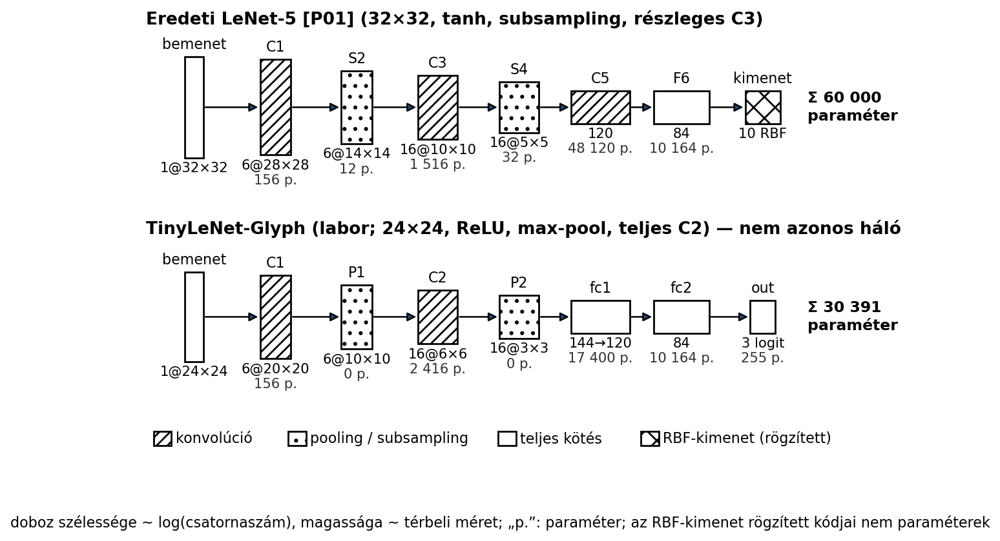

Ez az egység a klasszikus konvolúciós hálózatok kiindulópontját, a LeNet-családot és azon belül a LeNet-5 szerkezetét vizsgálja. A 12.4. III. ellenőrző pont: önállóan tanuló kis háló egységből a teljes tanítási ciklust, a 14.4. Csoportos és depthwise konvolúció egységből a csatornakapcsolatok korlátozását, a 16.4. IV. ellenőrző pont: a CNN-operátor teljes megértése egységből pedig a CNN-operátor alak-, gradiens- és szimmetriavizsgálatát ismerjük. Itt a cél az, hogy egy konkrét réteggráfon mutassuk meg: hogyan kapcsolódnak a térbeli szűrők, a csatornabővítés, az alulmintavételezés és az osztályozófej. Induló kérdés: egy 32×32-es bemenetre 5×5-ös kernel, stride 1 és padding 0 mellett hány térbeli kimeneti elem adódik, és miért beszélünk mégis „konvolúciós” rétegről akkor, amikor a keretrendszer keresztkorrelációt számol? A válasz: , tehát térképenként , a hat C1-térképen összesen térbeli kimeneti elem adódik; a „konvolúciós” elnevezés hagyomány, mert a keretrendszer kernelmegfordítás nélküli keresztkorrelációt számol (lásd a LeNet-5 réteggráfját tárgyaló szakaszt).
A [P01] tanulmány a LeNet-5 hálózatot a kézírásos dokumentumfelismerésre vezette be. Az eredeti architektúrát a cikk II.B szakasza (7–8. o., 2. ábra, I. táblázat, (5)–(6) egyenlet) írja le; az alábbi táblázat ebből készült, a jobb oldali oszlopok a labor saját, egyszerűsített TinyLeNet-Glyph változatát mutatják, amelyet a levezetés mutat be. A saját változat nem az eredeti reprodukciója.
| Réteg | Eredeti LeNet-5 [P01] | Param. [P01] | TinyLeNet-Glyph (labor) | Param. |
|---|---|---|---|---|
| bemenet | ; háttér , előtér (átlag kb. 0, variancia kb. 1) | – | , | – |
| C1 | 6 térkép, konvolúció, kimenet | 156 | Conv2d(1,6,5), ReLU,
|
156 |
| S2 | , nem átfedő; a négy bemenet összege tanulható együttható tanulható bias, majd telítődő aktiváció: a [P01]-ben a skálázott tanh , nem logisztikus szigmoid | 12 | MaxPool2d(2), paraméter nélkül |
0 |
| C3 | 16 térkép, , részleges kötés az I. táblázat szerint | 1516 | Conv2d(6,16,5) teljes kötés, ReLU,
|
2416 |
| S4 | mint S2, | 32 | MaxPool2d(2),
|
0 |
| C5 | 120 térkép, konvolúció minden S4-térképen, kimenet | 48 120 | Linear(144,120), ReLU |
17 400 |
| F6 | 84 egység, teljes kötés C5-höz | 10 164 | Linear(120,84), ReLU |
10 164 |
| kimenet | 10 euklideszi RBF-egység, , kézzel választott, rögzített kódokkal (nem tanulható; a cikk szerinti RBF-súlyok a paraméterszámban nem szerepelnek, ezért itt „–”) | – | Linear(84,3) logit, cross-entropy |
255 |
Az eredeti hálóban a C1–F6 rétegek súlyozott összegét a skálázott tangens hiperbolikus függvény nyomja össze: , , , ([P01] (5)–(6) egyenlet; a paramétereket a cikk A. függeléke indokolja). A cikk szerint a teljes háló 340 908 kapcsolatot, de a súlymegosztás miatt csak mintegy 60 000 szabad paramétert tartalmaz.
A LeNet-5 rétegsora az eredeti bemeneti skálával (a háttér , az előtér , nem ):
A modernizált, saját TinyLeNet-Glyph változat bemenete ; a két bemeneti skálát nem szabad összekeverni.

Itt egy 5×5-ös, 6 kimeneti csatornájú szűrőréteg, egy 2×2-es alulmintavételező réteg, 16 csatornát állít elő, ismét alulmintavételez, az 5×5-ös bemenetet 120 csatornára képezi, pedig 84 rejtett egységet tartalmazó affin réteg, amelyet a kimenet követ. A mai keretrendszerekben megvalósítható egyszerű affin rétegként is, mert a bemeneti térbeli kiterjedés itt már 5×5. A fejezet címében szereplő lokális megosztott reprezentáció arra utal, hogy a konvolúciós réteg ugyanazt a kis térbeli kernelt (megosztott súlyokkal) minden térbeli pozíción alkalmazza: a kimenet minden pontja egy lokális bemeneti ablak reprezentációja, a súlymegosztás miatt a reprezentáció eltolásra ekvivariáns, és a paraméterszám nem nő a képmérettel. A saját változat rétegeit a továbbiakban C1, P1, C2, P2, fc1, fc2, out névvel jelöljük, így a rétegnevek nem ütköznek az F1–F5 feladatnevekkel; az eredeti LeNet-5 rétegneveit (C1, S2, C3, S4, C5, F6) változatlanul használjuk.
Konvolúciós réteg mint keresztkorreláció. A 13.1. Kép mint diszkrét többcsatornás jel NCHW-indexelését és a 13.2. Konvolúció és cross-correlation definícióját használjuk. Egyetlen output elem:
Ez kernelmegfordítás nélküli keresztkorreláció. A „konvolúciós réteg” elnevezés a szakirodalmi hagyományból jön; a tanulás szempontjából a megfordítás nem lényeges, mert a súlyokat amúgy is tanuljuk. A LeNet-ben a térbeli szűrés után nemlineáris aktiváció, az eredeti hálóban a tanh-családhoz tartozó telítődő függvény következik, nem a mai ReLU.
Subsampling réteg. A „subsampling” a LeNet kontextusában nem azonos a modern max-poolinggal. Az eredeti -rétegek a 2×2-es cellát tanulható súllyal és eltolással összegzik, majd telítődő aktivációt alkalmaznak; ez tehát tanulható paramétereket tartalmaz. A modern max-pool ezzel szemben paraméter nélküli, cellánkénti maximumot vesz:
ahol a LeNet-szerű beállításban . A két művelet nem reprodukciós értelemben sem felcserélhető: más a gradiens útja, és más a paraméterszám.
Classifier head. A konvolúciós rétegek által előállított feature mapokat a háló vége lapítja, majd affin rétegekre bízza az osztályozást. A LeNet-5 esetében ez a szakasz. A modern változatokban a kimenet előtti affin réteg véges logitokat ad; a softmax és a cross-entropy kapcsolatát a 7.2. Softmax és többosztályos cross-entropy tárgyalta; ott rögzítettük, hogy a loss logitokat vár, nem softmaxolt valószínűséget.
Az eredeti LeNet-5 leírása és a mai könyvtári példák közötti eltérés gyakran elmosódik. A három legfontosabb különbség:
A „történeti változat” kifejezés tehát nem csupán címke: a változat megnevezéséhez pontosan rögzíteni kell a bemeneti méretet, az aktivációt, a pooling típusát, a csatornakötést és a kimeneti réteg szerkezetét.
A laborhoz választott saját változat:
A térbeli kimeneti méret a 14.1. Stride, padding, dilation és kimeneti méret formulájával:
A számítás lépésről lépésre:
| Réteg | Kimeneti alak | Paraméterképlet | Paraméterszám |
|---|---|---|---|
| C1 | 6×20×20 | 156 | |
| P1 | 6×10×10 | 0 | 0 |
| C2 | 16×6×6 | 2416 | |
| P2 | 16×3×3 | 0 | 0 |
| fc1 | 120 | 17 400 | |
| fc2 | 84 | 10 164 | |
| out | 3 | 255 |
A bias-tag minden kimeneti csatornán, illetve kimeneti egységen külön számít. Az összeg:
Ez nem a LeNet-5 eredeti paraméterszáma; ez a saját laborváltozaté. A fenti levezetés típusa egyszerű alak- és paraméterszámítás, nem tételbizonyítás; az ellenőrzés módja a képletek indexhatár-vizsgálata és a későbbi kód.
Előfeltétel. Python 3.12 és a cnn-labor
csomag rögzített környezete (uv sync: NumPy 2.3.5, pandas
2.3.3, PyTorch 2.14.1+cpu; a közölt kimenetek a könyv ellenőrző
környezetéből, NumPy 2.5.4, pandas 3.1.0 és PyTorch 2.15.0+cpu alatt
készültek), CPU; a labor a szakasz kódját használja, a szükséges
csomagokat a laborcsomag rögzített környezete biztosítja. Bemenet a
GlyphLab lab/data/images.npy, labels.npy,
metadata.csv és corrupted_test.npy fájlja; a
tiny_lenet_check.py a lab/ könyvtárból
futtatható (python tiny_lenet_check.py).
A labor nem tanít, hanem a modult és az adatbetöltést ellenőrzi.
Munkakönyvtár: lab/; a szkript a saját könyvtárához képest
keresi a data/ mappát. Az alábbi kód futtatható; az utána
közölt kimenet a rögzített környezetű ellenőrző futás mért
kimenete (Python 3.12.3, NumPy 2.5.4, pandas 3.1.0, PyTorch
2.15.0+cpu, CPU, 1 szál, seed 20261020). A hallgató a
python tiny_lenet_check.py paranccsal futtassa.
Az adat a GlyphLab gyűjtemény: data/images.npy alakja
,
float32, értéktartománya
(szürkeárnyalatos NCHW-képek); data/labels.npy alakja
,
int64, értékei
(0=vertical, 1=horizontal, 2=diagonal). A data/metadata.csv
oszlopai:
index, scene_id, view_id, label, split, xmin, ymin, xmax, ymax;
az index a képtömb sorindexe, a scene_id a
független mintavételi egység, egy jelenethez két nézet
(view_id 0 és 1) tartozik. A 120/30/30 jelenetes felosztás
240/60/60 képet jelent. A data/corrupted_test.npy a 60
tesztkép zajos változata, a metadata test sorainak sorrendjében. A
képeket a lab/generate_data.py állítja elő (alapértelmezett
seed 20261020); a részletes adatleírást a lab/ADATOK.md
tartalmazza.
# lab/tiny_lenet_check.py
from pathlib import Path
import numpy as np
import pandas as pd
import torch
import torch.nn as nn
torch.manual_seed(20261020)
device = torch.device("cpu")
dtype = torch.float32
DATA = Path(__file__).resolve().parent / "data"
class TinyLeNetGlyph(nn.Module):
"""LeNet-szerű, de nem az 1998-as LeNet-5 pontos reprodukciója:
teljes konvolúciós C3, ReLU, modern max-pool, három GlyphLab-osztály."""
def __init__(self, in_channels=1, num_classes=3):
super().__init__()
self.features = nn.Sequential(
nn.Conv2d(in_channels, 6, kernel_size=5, stride=1, padding=0),
nn.ReLU(),
nn.MaxPool2d(kernel_size=2, stride=2),
nn.Conv2d(6, 16, kernel_size=5, stride=1, padding=0),
nn.ReLU(),
nn.MaxPool2d(kernel_size=2, stride=2),
)
self.classifier = nn.Sequential(
nn.Flatten(),
nn.Linear(16 * 3 * 3, 120),
nn.ReLU(),
nn.Linear(120, 84),
nn.ReLU(),
nn.Linear(84, num_classes),
)
def forward(self, x):
return self.classifier(self.features(x))
images = np.load(DATA / "images.npy") # (360,1,24,24), float32, [0,1]
labels = np.load(DATA / "labels.npy") # (360,), int64
meta = pd.read_csv(DATA / "metadata.csv")
assert images.dtype == np.float32 and labels.dtype == np.int64
assert images.shape == (360, 1, 24, 24) and labels.shape == (360,)
assert images.min() >= 0.0 and images.max() <= 1.0
assert set(np.unique(labels)) <= {0, 1, 2}
assert meta["index"].tolist() == list(range(len(meta))), "a metadata index oszlopa nem sorrendi"
assert (meta["label"].to_numpy() == labels).all(), "a metadata és a labels.npy nem egyezik"
x = torch.from_numpy(images[:4].astype(np.float32)).to(device=device, dtype=dtype)
model = TinyLeNetGlyph().to(device=device, dtype=dtype)
with torch.no_grad():
logits = model(x) # a CrossEntropyLoss logitot vár, softmax nélkül
n_params = sum(p.numel() for p in model.parameters())
assert logits.shape == (4, 3), logits.shape
assert n_params == 30391, n_params
assert torch.isfinite(logits).all()
print("logits shape:", tuple(logits.shape))
print("parameter count:", n_params)
print("first-batch logits finite:", bool(torch.isfinite(logits).all()))MÉRT KIMENET (Python 3.12.3, PyTorch 2.15.0+cpu, CPU, 1 szál, seed 20261020):
logits shape: (4, 3)
parameter count: 30391
first-batch logits finite: TrueEllenőrzés: a shape-nak
-nak,
a paraméterszámnak
-nek
kell lennie; a Flatten a features kimenet
lapításából
-et
ad. A seed a súlyok inicializálását rögzíti; a fenti kimenet a futtatott
ellenőrzés eredménye, a konkrét logit-értékeket azonban a program nem
nyomtatja.
F1 (fogalmi, nehézség 1). Magyarázza el, miért nem
ugyanaz a művelet az eredeti LeNet-5 S2/S4
alulmintavételező rétege és a modern MaxPool2d(2,2). Adjon
egy konkrét, 2×2-es számpéldát, amelyen a maximum és a tanulható
súlyozott összeg különböző viselkedését megmutatja; nevezze meg, melyik
művelet melyik.
F2 (levezetési, nehézség 2). Egy új változat specifikációja: input ; conv1: 6 csatorna, 5×5, stride 1, padding 0; MaxPool 2×2, stride 2; conv2: 16 csatorna, 3×3, stride 1, padding 1; MaxPool 2×2, stride 2; fc1: 400→120; fc2: 120→84; kimenet: 84→3. Vezesse le minden réteg kimeneti alakját és a teljes paraméterszámot. Mutassa meg, miért tartja meg a padding=1 a 10×10-es térbeli méretet a 3×3-as kernelnél.
F3 (implementációs, nehézség 1). Implementálja a
TinyLeNetGlyph modult a levezetés specifikációja szerint
úgy, hogy a paraméterszám
legyen. Futtass rajta egy
-es
véletlen float32 tensort, és ellenőrizze a kimeneti alakot. A
megoldáshoz adja meg a futtatható kódot.
F4 (hibakeresési, nehézség 2). Az alábbi töredékben
a második poolingréteg már szerepel, de a Linear(576,120)
bemeneti méretét nem igazították hozzá. Lokalizálja az alakhibát, írja
le a futtatási következményt, javítsa a kódot, és adja meg azt az
assertet, amellyel a javítást visszaellenőrzöd.
self.features = nn.Sequential(
nn.Conv2d(1, 6, 5), nn.ReLU(), nn.MaxPool2d(2, 2),
nn.Conv2d(6, 16, 5), nn.ReLU(), nn.MaxPool2d(2, 2),
)
self.fc = nn.Linear(16 * 6 * 6, 120) # hibás: a bemenet valójában 16*3*3F5 (kísérleti/transzfer, nehézség 3). Tervezzen kísérletet annak eldöntésére, hogy a GlyphLabon tanított kis LeNet-típusú modell első konvolúciós rétegének szűrői nagyobb térbeli lokalitással bírnak-e, mint ugyanazon seed melletti véletlen inicializálású súlyok. Adja meg a hipotézist, a scene_id-alapú felosztást, a baseline-t, a lokalitás kvantitatív definícióját, a választási protokollt és az érvényességi határt. A beadandó terv kötelező elemei: hipotézis, a változó tényező, kontroll (baseline), metrika és megfigyelési egység, a seedek száma és konkrét értékei, számszerű döntési szabály, valamint erőforráskeret.
F1 megoldás. Az eredeti -réteg a 2×2-es cella értékeit tanulható súllyal és eltolással összegzi, majd telítődő aktivációt alkalmaz; a max-pool ezzel szemben a -ot veszi, és nincs tanulható paramétere. Példa: . A max-pool kimenete ; egy súlyozott összeg kimenete , ami itt véletlenül egyezik, ezért jobb ellenpélda: -nél a max=, a súlyú súlyozott összeg (ez nem átlag: az átlaghoz kellene). Az aktiváció és a gradiens útja is eltérő. Az -réteg műveletének leírását a [P01] II.B szakasza adja.
F2 megoldás. A -képletet használjuk. C1: , alak . P1: , alak . C2: , , tehát a padding éppen a kernel okozta 2 pixeles csökkenést kompenzálja: (ez az összefüggés mellett érvényes), ezért a térbeli méret 10×10 marad; alak . P2: , alak ; flatten . A paraméterek:
Összesen: . Alakellenőrzés: a lapítás valóban az fc1 bemenete; az osztályozó bemenete minden mintára a elemű lapított vektor.
F3 megoldás. Az alábbi kód önállóan futtatható (a modul definícióját is tartalmazza), és a levezetés specifikációját valósítja meg. A labor ellenőrző szkriptje 4 képes batch-en fut; itt a feladatnak megfelelően 2 képes batch-en ellenőrzünk.
import torch
import torch.nn as nn
torch.manual_seed(20261020)
class TinyLeNetGlyph(nn.Module):
def __init__(self, in_channels=1, num_classes=3):
super().__init__()
self.features = nn.Sequential(
nn.Conv2d(in_channels, 6, kernel_size=5, stride=1, padding=0),
nn.ReLU(),
nn.MaxPool2d(kernel_size=2, stride=2),
nn.Conv2d(6, 16, kernel_size=5, stride=1, padding=0),
nn.ReLU(),
nn.MaxPool2d(kernel_size=2, stride=2),
)
self.classifier = nn.Sequential(
nn.Flatten(),
nn.Linear(16 * 3 * 3, 120),
nn.ReLU(),
nn.Linear(120, 84),
nn.ReLU(),
nn.Linear(84, num_classes),
)
def forward(self, x):
return self.classifier(self.features(x))
x = torch.randn(2, 1, 24, 24, dtype=torch.float32)
model = TinyLeNetGlyph()
out = model(x)
n_params = sum(p.numel() for p in model.parameters())
assert out.shape == (2, 3)
assert n_params == 30391
print(tuple(out.shape), n_params)
# mért kimenet: (2, 3) 30391A mért futás (Python 3.12.3, PyTorch 2.15.0+cpu, CPU, seed 20261020) a alakot és a paramétert adta. A paraméterszám egzakt egész, ezért tűrésre nincs szükség; a shape-nál ugyanígy.
F4 megoldás. A második MaxPool2d(2,2)
után a konvolúciós rész kimenete
,
vagyis lapítva
elem. A hibás Linear(576,120) ezzel szemben
bemeneti elemet vár, ezért
batch esetén a továbbítás
RuntimeError: mat1 and mat2 shapes cannot be multiplied
kivételt eredményez. A javított rétegrész:
self.features = nn.Sequential(
nn.Conv2d(1, 6, 5), nn.ReLU(), nn.MaxPool2d(2, 2),
nn.Conv2d(6, 16, 5), nn.ReLU(), nn.MaxPool2d(2, 2),
)
self.fc = nn.Linear(16 * 3 * 3, 120)Ellenőrzés a features kimenetének lapítása után (a
modulban ezt az nn.Flatten() végzi a
classifier első elemeként):
x = torch.randn(4,1,24,24); h = self.features(x).flatten(1); assert h.shape == (4,144); assert self.fc(h).shape == (4,120).
A teljes modell kimenete
.
F5 megoldásminta. Hipotézis: a tanított modell első
rétegének szűrői nagyobb térbeli koncentrációt mutatnak a kernel
középpontja körül, mint az azonos seeddel inicializált, nem tanított
baseline szűrői. Adat: a GlyphLab data/metadata.csv
metaadat-táblája
(index, scene_id, view_id, label, split, xmin, ymin, xmax, ymax
oszlopokkal); a scene_id a független mintavételi egység
(jelenetazonosító, például G0-0000), egy jelenethez két
nézet (view_id 0 és 1) tartozik. A szerződés szerinti split
120/30/30 jelenet, azaz 240/60/60 kép; a képek a
data/images.npy tömbben vannak, a metaadatot csak a split
és a jelenetazonosítók kiolvasására használjuk. Baseline: azonos
architektúra azonos seeddel inicializálva, tanítás nélkül. Változó
tényező: a train spliten futtatott tanítás Adam optimalizálóval,
tanulási rátával, 32-es batchcsel, 20 epochkal, a legjobb validációs
loss-ú checkpoint kiválasztásával; a test splitet csak a végén
értékeljük. Lokalitás: minden
-ös
szűrőre
ahol a maximumnorma (Csebisev-távolság), a Frobenius-norma négyzete; tehát a középső -as mag négyzetes energiaaránya. Fontos, hogy a szűrő térbeli koncentrációját méri a kernel középpontja körül, nem a háló recepciós mezőjét és nem a lokalitás egyetlen teljes mértékét: egy nagy értékű szűrő is lehet éles peremdetektor, ezért az eredményt csak szűrőszintű proxként értelmezzük. Az egyenletes eloszlás referenciája -ös kernelnél . A hat szűrő mediánja önmagában leíró statisztika, nem elég a következtetéshez. A bizonytalanságbecsléshez 20, jelenetszinten újramintázott tanítóhalmazon újratanított modell–baseline párt használunk (egyetlen rögzített modellnél a tesztjelenetek újramintázása nem változtatná a szűrőstatisztikát); minden párra kiszámítjuk a mediánok különbségét, és a 95%-os intervallumot a 20 különbség 2,5 és 97,5 százalékos percentilise adja. Beadandó: a tanított és baseline mediánok nyers értékei, valamint az újratanítások páros különbségének intervalluma. Érvényességi határ: a GlyphLab három orientációosztályt tartalmaz, ezért az eredmény nem igazol általános „élreprezentációs” állítást; a lokalitásnövekedés egyetlen toy-adathalmazra vonatkozik.
Kötelező elemek kiegészítve. Seedek: 20261020, 20261021,
20261022 (minden karra azonosak). Döntési szabály (előre rögzítve): a
kezelt változatot csak akkor tekintjük jobbnak, ha az elsődleges metrika
seedenként párosított különbségének jelenetszintű bootstrap 95%-os
intervalluma
(,
np.random.default_rng(0)) teljesen a javulás oldalán van;
különben nem állítunk különbséget. Erőforráskeret: CPU, 1 szál,
float32; a futások számát (karok × seedek) és az
epochszámot a terv rögzíti, a tényleges futásidőt a napló méri.
A leggyakoribb tévedés, hogy egy modern, LeNet-szerű modellt
automatikusan „az eredeti LeNet-5 reprodukciójának” neveznek.
Ellenpélda: a fenti TinyLeNetGlyph 24×24-es bemenetet,
ReLU-t, max-poolingot, teljesen konvolúciós C3-at és 3 osztályos
logit-kimenetet használ; az eredeti LeNet-5 ezzel szemben 32×32-es
bemenetet, telítődő aktivációt, tanulható súlyozású subsamplinget,
C3-nál nem teljes csatornakötést és más kimeneti felépítést alkalmaz. Ha
valaki a laborváltozat
paraméterét az 1998-as cikk paraméterszámának állítaná be, téves
összehasonlítást tenne, mert a C3-kötési tábla eltérése miatt a két háló
súlytenzora szerkezetileg sem azonos. A korrekt megfogalmazás:
„LeNet-típusú, modernizált változat”.
Önellenőrzés: a
-képletbe
a padding, stride és kernel értékek visszahelyettesítése; a
paraméterszámok kézi összegzése a sum(p.numel())
ellenőrzéssel szemben; annak ellenőrzése, hogy a lapítás mérete mindig a
feature map térfogata. Korábbi fogalom visszahívása: a 16.1. Eltolási equivariance és invariance szerint a
konvolúciós réteg eltolási ekvivarianciát ad, de invarianciát önmagában
nem; a LeNet-ben az invariancia felé az alulmintavételező rétegek
lépnek. Az 5.1. Esemény, feltétel és véletlen
változó tanulsága szerint a végső softmax kimenet normalizált
valószínűségeloszlás, a három logit önmagában nem az.
A LeNet-5 a konvolúciós hálózatok történeti alapváltozata: a P01 tanulmány a kézírásos dokumentumfelismerésre vezette be. A réteggráf három komponenst kapcsol össze: térbeli keresztkorrelációs rétegeket, 2×2-es alulmintavételező rétegeket és affin osztályozófejet. Az eredeti LeNet-5 32×32 bemenetet, telítődő aktivációt, súlyozott subsamplinget, C3-nál részleges csatornakötést és más kimenetet használ; a mai könyvtárakban gyakori max-poolos, ReLU-s, teljes konvolúciós változat ettől eltér, ezért nem nevezhető pontos reprodukciónak. A laborban megvalósított TinyLeNet-Glyph 24×24-es GlyphLab-bemenetre épül, 30 391 tanulható paramétere van, és logitokat ad három osztályra.
A következő, 17.2. AlexNet és a kísérleti kontextus egység az AlexNet hálózatot vizsgálja: ott a méretnövekedés, a kétutas GPU-elrendezés és a ReLU-alapú gyorsabb tanítás hoz új tervezési döntést.